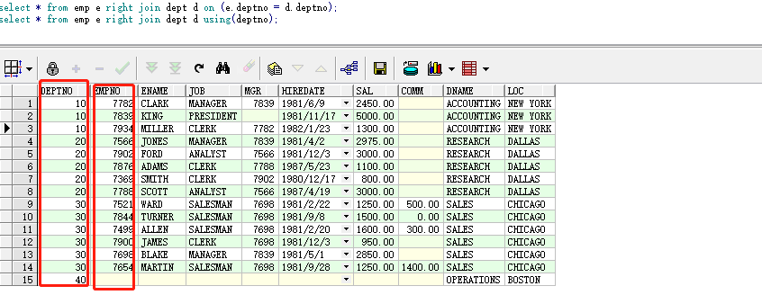

增删改查
建表
oracle创建表时，不支持在建表时同时增加字段注释。并且写约束时要写全，
我不知道时间类型在oralce中如何设置， 不了解default 关键字的使用
1 | //这是mysql的建表语句。 与oracle建表语句有很大差异。 |
1 | //oracle建表 |
1 |
|
笛卡尔乘积 : 两个表的每一个字段都进行匹配，展示在同一行。a表中的每一行都和b表的所有行进行配对。
插入
1 | #插入 根据表名插入数据， 需要填写全部字段。 |
删除
1 | #根据id删除一条数据 |
更新
1 | #根据条件，找到数据， 根据'set'后面的键值对修改数据。 如果没有'where'条件，会更新所有数据。 |
查询
1 | select * from sys_user; |
关联查询
笛卡尔积
等值关联查询
内关联
左外连接
右外连接
全外连接
自连接
笛卡尔积:
笛卡尔积指做关联操作的每个表的每一行都和其它表的每一行做组合，假设两个表的记录条数分别是X和Y，笛卡尔积将返回X * Y条记录。当两个表关联查询时，不写连接条件，得到的结果即是笛卡尔积。例如：
1 | SELECT COUNT(*) FROM emp; --14条记录 |
等值关联查询：
等值连接是连接查询中最常见的一种，通常是在有主外键关联关系的表间建立，并将连接条件设定为有关系的列，使用等号”=”连接相关的表。例如查询职员的姓名、职位以及所在部门的名字和所在城市，使用两个相关的列做等值操作：
1 | #常用的多表查询。 |
内关联
内连接返回两个关联表中所有满足连接条件的记录。例如查询员工的名字和所在部门的名字：
1 | select e.ename, d.dname from emp e, dept d where e.deptno = d.deptno; |

外连接
内连接返回两个表中所有满足连接条件的数据记录，在有些情况下，需要返回那些不满足连接条件的记录，需要使用外连接，即不仅返回满足连接条件的记录，还将返回不满足连接条件的记录。比如把没有职员的部门和没有部门的职员查出来。外连接的语法如下：1
2
3
4
5
6oracle使用using关键字
sql/92标准可以使用using关键字来简化连接查询，但是只是在查询满足下面两个条件时，才能使
用using关键字进行简化。
1.查询必须是等值连接。
2.等值连接中的列必须具有相同的名称和数据类型。
参考链接： https://www.2cto.com/database/201503/384694.html
1 | #左外关联 |
1 | #右外连接 |

1 | #全连接 |
1 | #自连接 |
1 | 增 |